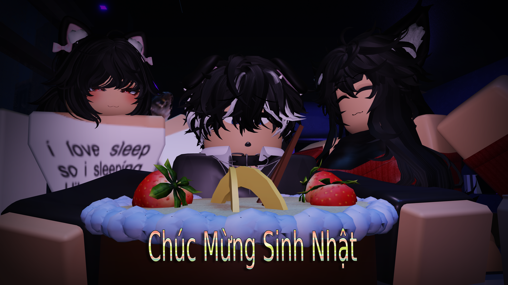

Hey there Toan, it's almost 4 years since we met. I've been through a lot of things for this year you had seen my phases over the past months, but you've been always there by my side. Back in our early days when you made a tail model for me, it actually caught my mind on you eventually, we ended up chilling.
Some things you mentioned on how your experience and enjoyment of your life, or something secrets you told me that you don't tell to others (but I eventually forgot some of them).
But there's only one thing that shocked me most, unlike anyone else. That is out of nowhere you made a standee of one of my OC which nobody has done before. For out of many and anything else, you picked that piece of me. Which is very special that I cannot express until even in the present. From that day on, I totally changed my perspective to you.
Whenever, even how busy or how important in a personal situation or how tight a situation I am in, once I got a message from you I immediately check on you, and may tell you what I'm doing. I got a strong fondness of you, that's why I talk to you most, more than anyone else.
I really don't have someone else I can mostly talk but you. I don't have a girlfriend that usually other people mostly spend time with, so whenever something happened I always end up oversharing to you. Even a slight different vibe tone or any different details whenever you talk, I always notice it. Even that one time you said last week ago "I don't feel so good", I can't stop but to wonder what happened and ask why.
However this is the problem of mine, due to how random I talk there's always a time I end up messing up and end up misunderstanding the situation. Some of it may cause anyone to get confused or mad like in our past whenever I run out on what I talk with, it's usually something stupid which may trigger you, and that's the bad habit of mine, ever since from Dep too. Or even irl I talk, I delivered something wrong just to respond with my poor communication.
Jump to present: you had so many changes, I've been looking out for you. Look, I'm sorry that made you think I'm guilt tripping you; it wasn't my intention to bring that. I was sending reels that indirectly felt relatable to our experience.
Although we usually played together back in the day and I miss that our night gameplay that my parents always caught me playing at late night. It's the only thing keeping us dry; I always ask "how are you" or "what you doing" or ask to play together.
Now that things had changed, you have made a lot of friends who are far better than me. I don't blame you for it. You are a good man and a good heart deserves better I'm not really everyone's first option.
I always felt fear of missing out as much as I want to talk to you still and I really don't like our conversation so cold and dried up, but you want to be alone, this time I will give you that space and mark my words for it, although it hurts me feeling so lonely without how we used to talk.
Now that you have a girlfriend who I indirectly introduced and told you about, probably you taking notes too from her. I shouldn't be sad about it, but instead be happy knowing the fact you finally found your happiness. Hoping the best for you if you were happy being with her, so am I.
I may have few friends in personal and online, but you were above all of them. I place you on special more than anyone else. I'm so glad that I meet you if it wasn't for you, I'd very likely wouldn't exist media and moving forward, You are the Real one I always be there to support you.
